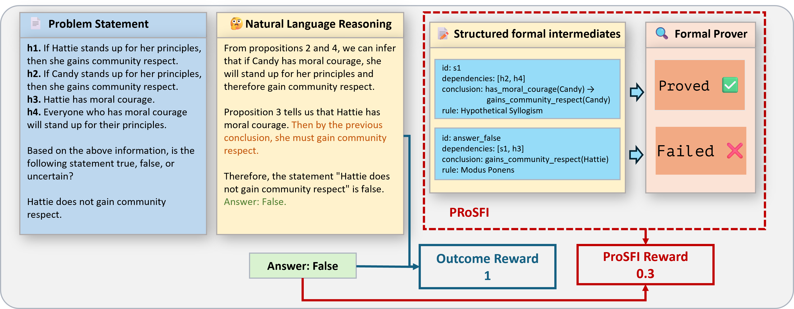
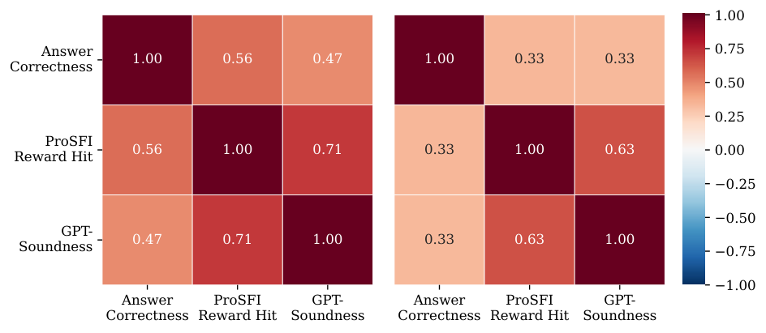

LLM emits structured reasoning steps in Lean 4 syntax, each checked with Lean tactics such as aesop and simp (or Z3/Prover9) to produce RL process rewards; includes a direct Lean-generation baseline.
Abstract
Large language models (LLMs) have recently demonstrated impressive performance on complex, multi-step reasoning tasks, especially when post-trained with outcome-rewarded reinforcement learning Guo et al. 2025. However, it has been observed that outcome rewards often overlook flawed intermediate steps, leading to unreliable reasoning steps even when final answers are correct. To address this unreliable reasoning, we propose PRoSFI (Process Reward over Structured Formal Intermediates), a novel reward method that enhances reasoning reliability without compromising accuracy. Instead of generating formal proofs directly, which is rarely accomplishable for a modest-sized (7B) model, the model outputs structured intermediate steps aligned with its natural language reasoning. Each step is then verified by a formal prover. Only fully validated reasoning chains receive high rewards. The integration of formal verification guides the model towards generating step-by-step machine-checkable proofs, thereby yielding more credible final answers. PRoSFI offers a simple and effective approach to training trustworthy reasoning models.
Problem
Outcome-rewarded RL training of LLMs can reach correct final answers through flawed intermediate reasoning. Having modest-sized (7B) models generate full formal proofs directly is rarely successful.
Approach
PRoSFI has the model output natural-language reasoning plus a JSON array of atomic inference steps. Each step lists its dependencies, a conclusion written in Lean 4 syntax, and the inference rule applied. Each step is verified with a formal prover, using lightweight Lean tactics or external solvers. Only fully verified chains receive maximal reward under GRPO training of Qwen2.5-7B-Instruct.

Figure 1 : Pipeline for Process Reward over Structured Formal Intermediates and comparison with Outcome Reward. The process begins with a problem statement (left block) containing multiple propositions (h1–h4) related to individuals (Hattie and Candy). Then, a large language model (LLM) first generates natural language reasoning steps to solve the problem (middle block). The Outcome Reward approac
Results
On ProverQA, PRoSFI keeps or improves answer accuracy and raises GPT-judged reasoning soundness from about 22% to 76% (Hard) and from 12% to 56% (Extra). A direct Lean proof generation baseline gave only small or negative gains. The method also generalizes to Knights and Knaves, including out-of-distribution difficulty levels.

Figure 3 : Left: Metric correlation heatmap on ProverQA-Hard . Right: Metric correlation heatmap on ProverQA-Extra . Compared to Answer Correctness, PRoSFI Reward Hit better reflects reasoning-path soundness.